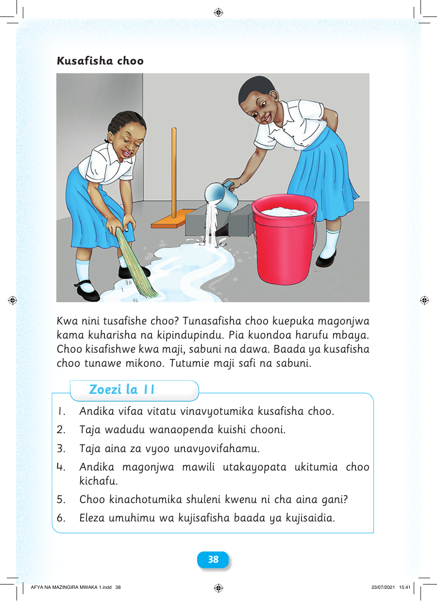

Kusafisha choo Kwa nini tusafishe choo? Tunasafisha choo kuepuka magonjwa kama kuharisha na kipindupindu. Pia kuondoa harufu mbaya. Choo kisafishwe kwa maji, sabuni na dawa. Baada ya kusafisha choo tunawe mikono. Tutumie maji safi na sabuni. Zoezi la 11 1. Andika vifaa vitatu vinavyotumika kusafisha choo. 2. Taja wadudu wanaopenda kuishi chooni. 3. Taja aina za vyoo unavyovifahamu. 4. Andika magonjwa mawili utakayopata ukitumia choo kichafu. 5. Choo kinachotumika shuleni kwenu ni cha aina gani? 6. Eleza umuhimu wa kujisafisha baada ya kujisaidia. 38 AFYA NA MAZINGIRA MWAKA 1.indd 38 23/07/2021 15:41